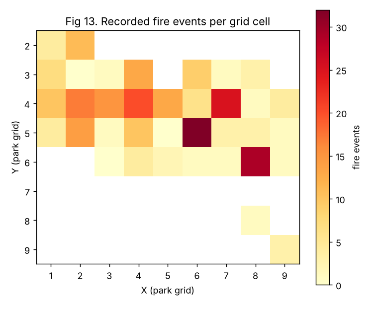

What it is
An ML pipeline and Flask dashboard for the patent application Autonomous Wildfire Prediction and Response System (Indian application 202641083188): sensor readings are validated, three models vote on fire risk, a confidence measure says how much they agree, and an orchestrator allocates drones, trucks, tankers and personnel under scarcity.
What the numbers actually are
The disclosure lists projected figures of 90–95% accuracy. This code measures the real thing on the disclosure’s own experiment (UCI Forest Fires, 517 records):
| Single split (test n = 78) | 5-fold × 10 repeats | |
|---|---|---|
| Random Forest | accuracy 0.679, AUC 0.67 | accuracy 0.580 ± 0.039, AUC 0.596 |
| Gradient Boosting | accuracy 0.641, AUC 0.70 | accuracy 0.564 ± 0.035, AUC 0.593 |
| Logistic Regression | accuracy 0.603, AUC 0.61 | accuracy 0.547 ± 0.043, AUC 0.551 |
| Always predict the majority class | 0.513 | 0.522 |
The models beat chance, but modestly. The 78-row test split is optimistic and noisy, so cross-validation is the steadier estimate; this dataset is known to be hard. Claims in the disclosure that did not hold up, and are reported as such: that confidence gating reduces false alarms, that the ensemble beats single models, and that temperature, wind and DMC are the most important features (park-grid position and calendar carry about 0.80 of the importance).

Design choices worth knowing
- Hotter, drier or windier can never mean lower risk. The Random Forest and Gradient Boosting models are trained with monotonic constraints on the fire-weather features. The earlier unconstrained models scored a simulated heatwave lower than a cool, wet day in 11 of 12 months; a fire-risk tool should not do that. Constraining them costs nothing measurable (AUC 0.595 against 0.583) and turns the property into a tested guarantee.
- Evacuation advisories need sign-off. The disclosure describes fully autonomous action; here the advisory is drafted automatically but stays pending approval.
- Simulated data can never retrain the model. Only outcomes a person records against a logged prediction count, and there must be at least 30 with both classes present.
- Champion and challenger. A retrained model replaces the current one only if it does not lose on a hold-out set.
What it doesn’t do
- 517 records from one park (2000–2003) with weather-index inputs only, and a label that treats a 0.1 ha fire and a 1,000 ha fire the same.
- Sensors are simulated and actions go through a simulated gateway. Nothing controls real equipment.
- Not implemented: the image and time-series models the disclosure defers, MQTT ingestion, edge packaging and alerts. It runs as a single process.